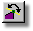

As models are built, the program will automatically try to make connected
patches orient uniformly. Unfortunately, the connected patches, or
To see patch normals, select Options from the Tools menu, and click the Display Normals check box on the Modeling tab. For each legal patch, a short yellow line will appear pointing as the surface's normal will point. If the normals are pointing inwardly, you can switch their direction by first grouping the control points that form the patches that need to be flipped, then clicking the Flip Normals button.
The default keyboard shortcut key for Flip is F.